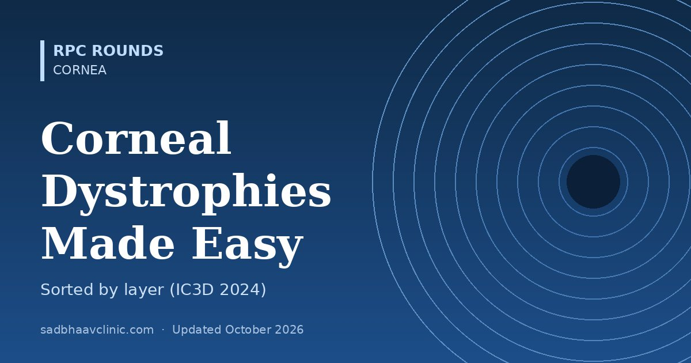

Last updated: October 2026
There are more than 20 corneal dystrophies, but you only need to know which layer each starts in and a few "odd ones out". The layer predicts the symptoms, the look at the slit lamp, the stain and the operation.
| Granular (type 1) | Lattice (type 1) | Macular | |
|---|---|---|---|
| Deposit | Hyaline | Amyloid | Glycosaminoglycans (keratan sulphate) |
| Stain | Masson trichrome (red) | Congo red: apple-green birefringence; thioflavin T | Alcian blue, colloidal iron |
| Look | Discrete white crumbs, clear stroma in between, periphery spared | Fine branching refractile lines, central | Grey-white hazy spots, cloudy stroma in between, reaching the limbus |
| Thickness | Normal | Normal | Thin |
| Erosions | Occasional | Frequent | Occasional |
| Inheritance | AD (TGFBI R555W) | AD (TGFBI R124C) | AR (CHST6) |
| Vision falls | Late (4th–5th decade) | Middle age | Early (1st–2nd decade) |
Memory hook: Marilyn Monroe Always Gets Her Man in L.A. City: Macular – Mucopolysaccharide – Alcian blue; Granular – Hyaline – Masson; Lattice – Amyloid – Congo red.
Memory hook: Macular is the odd one out in everything: recessive, not TGFBI, whole stroma to the limbus, cloudy in between, thin cornea, earliest loss of vision.
| Mutation | Dystrophy | Layer | What to remember |
|---|---|---|---|
| R124C | Lattice type 1 (classic) | Anterior–mid stroma | Amyloid lines; erosions. Over 80 other TGFBI variants give “lattice variants” (IC3D 2024) |
| R124H | Granular type 2 (Avellino) | Anterior stroma | Granular + lattice features; worsens dramatically after LASIK: screen family history before refractive surgery |
| R124L | Reis–Bücklers | Bowman | Geographic opacities; painful erosions from early childhood; recurs early in grafts |
| R555W | Granular type 1 | Anterior stroma | Breadcrumbs with clear spaces |
| R555Q | Thiel–Behnke | Bowman | Honeycomb pattern; curly fibres on electron microscopy |
Memory hook: Codon 124 gives lattice (C), Avellino (H) and Reis–Bücklers (L); codon 555 gives the two neat patterns, granular crumbs (W) and the Thiel–Behnke honeycomb (Q).
| Dystrophy | Key features |
|---|---|
| Epithelial basement membrane (EBMD, map-dot-fingerprint, Cogan) | Most common; usually degenerative rather than inherited; maps, dots and fingerprint lines; recurrent erosions; irregular astigmatism that spoils keratometry before cataract surgery |
| Meesmann | Myriad tiny intraepithelial cysts in childhood; keratin genes KRT3 and KRT12; usually mild |
| Lisch | Whorled grey band-shaped epithelium seen best on retroillumination; MCOLN1; now autosomal dominant (IC3D 2024) |
| Epithelial recurrent erosion (ERED) | Erosions from childhood, often improve with age; COL17A1; Franceschetti, Smolandiensis and Helsinglandica are now grouped with it |
| Gelatinous drop-like | Mulberry-like subepithelial amyloid; recessive (TACSTD2); common in Japan; recurs after surgery |
| Dystrophy | Onset | Key features | Gene |
|---|---|---|---|
| Fuchs | Usually after 40; women more often | Central guttae → stromal oedema → epithelial bullae; morning blur. Guttae + oedema → DMEK or DSAEK | TCF4 CTG repeat expansion (late onset); COL8A2 (early onset) |
| Posterior polymorphous (PPCD) | Childhood, often asymptomatic | Vesicles, bands and geographic patches at Descemet; endothelium behaves like epithelium; may cause glaucoma and corectopia | OVOL2, ZEB1, GRHL2 |
| Congenital hereditary endothelial (CHED) | Birth | Bilateral ground-glass corneas, very thick, normal IOP and corneal diameter (vs. congenital glaucoma); nystagmus in severe cases | SLC4A11, recessive |
| X-linked endothelial | Birth (males) | Moon-crater endothelial changes; clouding in males | X-linked |
| Problem | Options |
|---|---|
| Recurrent erosions (EBMD, ERED, Reis–Bücklers, lattice) | Lubricants, bandage contact lens, hypertonic saline; debridement with diamond burr polishing, anterior stromal puncture, or PTK |
| Anterior stromal deposits (granular, Avellino, Reis–Bücklers, Thiel–Behnke) | PTK first; DALK if deeper; recurrences can be re-treated with PTK |
| Deeper stromal disease (lattice, macular, Schnyder) | DALK (macular may also affect the endothelium, so PK is sometimes needed) |
| Endothelial disease (Fuchs, CHED, PPCD) | DMEK or DSAEK; Descemet stripping only (DSO) with a ROCK inhibitor for selected Fuchs patients |
Where residents slip
Related: Cornea hub, Fuchs dystrophy, Genes and eye diseases, Eye embryology made easy.
📘 Want more exam-ready material? See Most Commons in Ophthalmology on Kindle, or browse all my books.
Looking for an eye specialist in Ahmedabad? Learn about our Eye Department or book a consultation with Dr. Dhaval Patel.